|
OpenGV
A library for solving calibrated central and non-central geometric vision problems
|


|
|
OpenGV
A library for solving calibrated central and non-central geometric vision problems
|
|
This page gives an introduction to the usage of OpenGV including a description of the interface and explicit examples. More information can be found in [17]. However, in order to have a smooth communication and full understanding of the functionality and documentation of the library, we first need to clearly define the meaning of a couple of words in the present context.
Camera: OpenGV assumes to be in the calibrated case, and landmark measurements are always given in form of bearing vectors in a camera frame. A camera therefore denotes a camera reference frame with a set of bearing vectors, all pointing from the origin to landmarks. The following figure shows a camera c with bearing vectors (in red). The bearing vectors are all lying on the unit-sphere centered around the camera.
Viewpoint: You will notice that the documentation of the code very frequently talks about viewpoints instead of cameras. One of the advantages of OpenGV is that it can transparently handle both the central and the non-central case. The viewpoint is a generalization of a camera, and can contain an arbitrary number of cameras each one having it's own landmark-measurements (e.g. bearing vectors). A practical example of a viewpoint would be the set of images and related measurements captured by a fully-calibrated, rigid multi-camera rig with synchronized cameras, which therefore still represents a single (multi)-snapshot (i.e. viewpoint). Each camera has its own transformation to the viewpoint frame. In the central case the viewpoint simply contains a single camera with an identity transformation. The most general case-the generalized camera-can also be described by the viewpoint. Each bearing vector would then have it's own camera and related transformation. A generalized camera would hence be represented by an exhaustive multi-camera system. The following image shows a viewpoint vp (in blue) with three cameras c, c', and c'', each one containing its own bearing vector measurements.

The library-structure is best analyzed at the hand of the namespace or directory hierarchy (as a matter of fact, there is no difference between the two):
You will quickly notice that all methods in OpenGV use a variable called adapter as a function-call parameter. OpenGV is designed based on the adapter pattern. "Adapters" in OpenGV are used as "visitors" to all geometric vision methods. They contain the landmarks, bearing-vectors, poses, correspondences etc. used as an input to the different methods (or references to the alike), and allow to access those elements with a unified interface. Adapters are derived from a base-class that defines the unified interface and they have to implement the related functions for accessing bearing-vectors, world-points, camera-transformations, viewpoint-poses, etc. There are three adapter-base-classes:
The derived adapters have the task of transforming the data from the user-format to OpenGV types. This gives the library great flexibility. Users have to implement only a couple of adapters for the specific data-format they are using, and can then access the full functionality of the library. OpenGV currently contains adapters that simply hold references to OpenGV types (no transformation needed) plus adapters for mexArrays used within the Matlab-interface. Further adapters are planned, such as for instance an adapter for OpenCV keypoint and match-types including a camera model. The user would then be able to chose whether normalization of keypoints is done "on-demand" or "once for all" at the beginning, which is more efficient in sample-consensus problems.
Note that adapters containing the tag "Central" in their name are adapters for a single camera (i.e. view-points with only one camera having identity transformation). Adapters having the tag "Noncentral" in their name are meant for view-points with multiple cameras (e.g., multi-camera systems, generalized cameras).
Please check out the doxygen documentation on the above base-classes, they contain important documentation on the functions that need to be overloaded for a proper implementation of an adapter.
As already mentioned, the entire library is assuming calibrated cameras/viewpoints, and it operates with 3D unit bearing vectors expressed in the camera frame. Calibrated means that the configuration of the multi-camera system (i.e. the inter-camera transformations) is known. The following introduces the different problems that can be solved with the library, and outlines the conventions for transformations (translations and rotations) in their context. Note that all problems have solutions for both the minimal and non-minimal cases, and may also be solved as sample-consensus or non-linear optimization problems. The code samples are mostly taken from the test files, which you can compile along with the library by setting BUILD_TESTS in CMakeLists.txt to ON.
Central absolute pose: The central absolute pose problem consists of finding the pose of a camera (e.g. viewpoint with a single camera) given a number of 2D-3D correspondences between bearing vectors in the camera frame and points in the world frame. The seeked transformation is given by the position 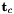 of the camera seen from the world frame and the rotation 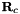 from the camera to the world frame. This is what the algorithms return (or part of it), and what the adapters can hold as known or prior information.
The minimal variants are p2p (a solution for position if rotation is known), p3p_kneip [1], p3p_gao [2], and UPnP [19]. The non-minimal variants are epnp [4], and UPnP [19]. The non-linear optimization variant is called optimize_nonlinear. Here's how to use them:
p3p_kneip, p3p_gao, and epnp can also be used within a sample consensus context. The following shows how to do it:
These examples are taken from test_absolute_pose.cpp and test_absolute_pose_sac.cpp.
Non-central absolute pose: The non-central absolute pose problem consists of finding the pose of a viewpoint given a number of 2D-3D correspondences between bearing vectors in multiple camera frames and points in the world frame. The seeked transformation is given by the position 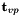 of the viewpoint seen from the world frame and the rotation 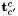 from the viewpoint to the world frame. This is what the algorithms return, and what the adapters can hold as known or prior information.

The minimal variant is gp3p, and the non-minimal variant is gpnp [3]. UPnP can be used for both the minimal and the non-minimal case [19]. The non-linear optimization variant is still optimize_nonlinear (it handles both cases). Here's how to use them:
gp3p can also be used within a sample-consensus context. It remains an AbsolutePoseSacProblem, this one is usable for both the central and the non-central case. We simply have to set algorithm to GP3P:
These examples are taken from test_noncentral_absolute_pose.cpp and test_noncentral_absolute_pose_sac.cpp.
Central relative pose: The central relative pose problem consists of finding the pose of a camera (e.g. viewpoint with a single camera) with respect to a different camera given a number of 2D-2D correspondences between bearing vectors in the camera frames. The seeked transformation is given by the position of the second camera seen from the first one and the rotation 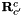 from the second camera back to the first camera frame. This is what the algorithms return (or part of it), and what the adapters can hold as known or prior information.
There are many central relative-pose algorithms in the library. The minimal variants are twopt (in case the rotation is known), twopt_rotationOnly (in case there is only rotational change, and using only two points), fivept_stewenius [5], fivept_nister [6], and fivept_kneip [7]. The libary also contains non-minimal variants, namely rotationOnly (in case of pure-rotation change), sevenpt [8], eightpt [9,10] and the new eigensolver [11] methods. All of them except twopt, twopt_rotationOnly, and fivept_kneip can be used for an arbitrary number of correspondences (of course at least the minimal number). The non-linear optimization variant is again called optimize_nonlinear. Here's how to use most of them (we assume a regular situation here, and thus omit the rotationOnly algorithms):
fivept_nister, fivept_stewenius, sevenpt, and eigthpt can also be used within a random-sample consensus scheme. It is done as follows:
These examples are taken from test_relative_pose.cpp and test_relative_pose_sac.cpp. There are also sample consensus problems for the case of pure-rotation, known rotation, or the eigensolver method. Feel free to explore opengv/sac_problems/relative_pose.
Non-central relative pose: The non-central relative pose problem consists of finding the pose of a viewpoint with respect to a different viewpoint given a number of 2D-2D correspondences between bearing vectors in multiple camera frames. The seeked transformation is given by the position 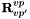 of the second viewpoint seen from the first one and the rotation from the second viewpoint back to the first viewpoint frame. This is what the algorithms return (or part of it), and what the adapters can hold as known or prior information.

There are three non-central relative pose methods in the library, the 17-point algorithm by Li [12], the 6-point method by Stewenius [16], and the new generalized eigensolver [18]. The 17-point algorithm as well as the generalized eigensolver can be used with an arbitrary number of points. The 6-point algorithm is usable with only 6-points exactly. "optimize_nonlinear" is again able to also handle the non-central case. Here's how to use these methods:
All algorithms are also available in a sample-consensus scheme:
These examples are taken from test_noncentral_relative_pose.cpp and test_noncentral_relative_pose_sac.cpp. Simply set SEVENTEENPT to GE or SIXPT in order to use the alternative algorithms.
Triangulation of points: OpenGV contains two methods for triangulating points. They are currently only designed for the central case, and compute the position of a point expressed in the first camera given a 2D-2D correspondence between bearing vectors from two cameras. The methods reuse the relative adapter, which need to hold the transformation between the cameras given by the position of the second camera seen from the first one and the rotation from the second camera back to the first camera frame.

There are two methods, triangulate (linear) and triangulate2 (a fast non-linear approximation). They are used as follows:
The example is taken from test_triangulation.cpp.
Alignment of two point-clouds: OpenGV also contains a method for aligning point-clouds. It is currently only designed for the central case, and computes the transformation between two frames given 3D-3D correspondences between points expressed in the two frames (here denoted by c and c', although it ain't necessarily need to be cameras anymore). The method returns the transformation between the frames given by the position of the second frame seen from the first one and the rotation from the second frame back to the first frame.
The method is called threept_arun, and it can be used for an arbitrary number of points (minimum three). There is also a non-linear optimization method again called optimize_nonlinear. The methods are used as follows:
There is also a sample-consensus problem for the point-cloud alignment. It is set up as follows:
These examples are taken from test_point_cloud.cpp and test_point_cloud_sac.cpp.
Note that there are more unit-tests in the test-directory. It shows the usage of all the methods contained in the library.
All the above mentioned Ransac-methods make use of a number of super-classes such that only the basic functions need to be implemented in the derived SacProblem (SampleConsensusProblem). The basic functions are responsible for getting valid samples for model instantiation, model instantiation itself, as well as model verification. SamplesConsensusProblem is the base-class for any problem we want to solve, and contains a virtual interface for the basic methods that need to be implemented. The base-class SampleConsensus is then for the sample-consensus method itself, calling the basic functions. So far only the Ransac is implemented [15].
Since the entire library is operating in 3D, we also need a way to compute and threshold reprojection errors in 3D. What we are looking at is the angle 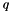 between the original bearing-vector 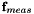 and the reprojected one . By adopting a certain threshold angle 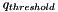, we hence constrain the to lie within a cone of axis and of opening angle .
The threshold-angle can be easily obtained from classical reprojection error-thresholds expressed in pixels 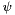 by assuming a certain focal length 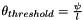. We then have 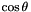.
The threshold we are using in the end is still not quite this one, but a value derived from it in analogy with the computation of reprojection errors. The most efficient way to compute a "reprojection error" is given by taking the scalar product of and , which equals to . Since this value is between -1 and 1, and we actually want an error that minimizes to 0, we take 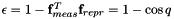. The threshold error is therefore given by
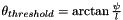
In the ransac-examples in the test-folder, you will often see something like this.
This notably corresponds to the above computation of our "reprojection-error"-threshold, with a focal length of 800.0 and a reprojection error in pixels of 0.5*sqrt(2.0).
As you go deeper into the code you might notice that there are a number of elements (mostly in the relative-pose context) that contain the tag "multi" in their name. The adapter base-class used here is called RelativeMultiAdapterBase. The idea of this adapter is to hold multiple sets of bearing-vector correspondences originating from pairs of cameras. A pair of cameras is, as the name says, a set of two cameras in different viewpoints. The correspondences are accessed via a multi-index (a pair-index referring to a specific pair of cameras, and a correspondence-index refering to the correspondence within the camera-pair).
Subsets of camera-pairs can be identified in a number of problems, such as
Non-central relative pose (2 viewpoints): Non-central relative pose problems involving two viewpoints typically originate from motion-estimation with multi-camera rigs. In the special situation where the cameras are pointing in different directions, and where the motion between the viewpoints is not too big (a practically very relevant case), the correspondences are typically originating from the same camera in both viewpoints. We therefore can do a camera-wise grouping of the correspondences in the multi-camera system. The following situation contains four pairs given by the black, green, blue, and orange camera in both viewpoints:

Central multi-viewpoint problems: By multi-viewpoint we understand here problems that involve more than two viewpoints. As indicated below, a problem of three central viewpoints for instance allows to identify three camera-pairs as well. The number of camera-pairs in an n-view problem amounts to the combination of 2 out of n, meaning n*(n-1)/2. For the below example, we could have tha camera pairs (c,c'), (c',c''), and (c'',c). The first pair would have a set of correspondences originating from points p1 and p4, the second one from p2 and p4, and the third one from p3 and p4.
The multi-adapters keep track of these camera-pair-wise correspondence groups. The benefit of it appears when moving towards random sample-consensus schemes. Have a look at the "opengv/sac/"-folder, it contains the MultiSampleConsensus, MultiRansac, and MultiSampleConsensusProblem classes. They employ the multi-indices, and the derived MultiSampleConsensusProblems exploit the fact that the correspondences are grouped:
All this stuff is highly experimental, so you probably shouldn't pay too much attention to it for the moment ;)
 1.8.11
1.8.11